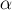
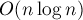

MAXimal
добавлено: 11 Jun 2008 11:20
редактировано: 2 Dec 2010 10:29
Содержание [скрыть]
Задача Джонсона с одним станком
Это задача составления оптимального расписания обработки  деталей на единственном станке, если
деталей на единственном станке, если  -ая деталь обрабатывается на нём за время
-ая деталь обрабатывается на нём за время  , а за
, а за  секунд ожидания до обработки этой детали платится штраф
секунд ожидания до обработки этой детали платится штраф  .
.
Таким образом, задача заключается в поиске такого переупорядочения деталей, что следующая величина (размер штрафа) минимальна. Если мы обозначим через перестановку деталей ( — номер первой обрабатываемой детали, — второй, и т.д.), то размер штрафа равен:
Иногда эта задача называется задачей однопроцессорного обслуживания множества заявок.
Решение задачи в некоторых частных случаях
Первый частный случай: линейные функции штрафа
Научимся решать эту задачу в случае, когда все линейны, т.е. имеют вид:
где  — неотрицательные числа. Заметим, что в этих линейных функциях свободный член равен нулю, т.к. в противном случае к ответу сразу можно прибавить этот свободный член, и решать задачу с нулевым свободным членом.
— неотрицательные числа. Заметим, что в этих линейных функциях свободный член равен нулю, т.к. в противном случае к ответу сразу можно прибавить этот свободный член, и решать задачу с нулевым свободным членом.
Зафиксируем некоторое расписание — перестановку . Зафиксируем какой-то номер  , и пусть перестановка равна перестановке , в которой обменяли -ый и
, и пусть перестановка равна перестановке , в которой обменяли -ый и  -ый элементы. Посмотрим, на сколько при этом изменился штраф:
-ый элементы. Посмотрим, на сколько при этом изменился штраф:
легко понять, что изменения произошли только с -ым и -ым слагаемыми:
![= c_{\pi^\prime_i} \cdot \sum_{k=1}^{i-1} t_{\pi^[...]](../tex2png/cache/0bbf10c5349d79fd3c4b25bb443361c2.png)
Понятно, что если расписание является оптимальным, то любое его изменение приводит к увеличению штрафа (или сохранению прежнего значения), поэтому для оптимального плана можно записать условие:
![\forall i=1 \ldots n-1 ~~~:~~ c_{\pi_i} \cdot t_{[...]](../tex2png/cache/183d0fbcf0544ecde073fd28af07e8f2.png)
Преобразуя, получаем:
Таким образом, оптимальное расписание можно получить, просто отсортировав все детали по отношению к в обратном порядке.
Следует отметить, что мы получили этот алгоритм так называемым перестановочным приёмом: мы попробовали обменять местами два соседних элемента расписания, вычислили, насколько при этом изменился штраф, и отсюда вывели алгоритм поиска оптимального расписания.
Второй частный случай: экспоненциальные функции штрафа
Пусть теперь функции штрафа имеют вид:
где все числа неотрицательны, константа  положительна.
Тогда, применяя аналогичным образом здесь перестановочный приём, легко получить, что детали надо сортировать в порядке убывания величин:
Третий частный случай: одинаковые монотонные функции штрафа
В этом случае считается, что все совпадают с некоторой функцией  , которая является возрастающей.
, которая является возрастающей.
Понятно, что в этом случае оптимально располагать детали в порядке увеличения времени обработки .
Теорема Лившица-Кладова
Теорема Лившица-Кладова устанавливает, что перестановочный приём применим только для вышеописанных трёх частных случаев, и только них, т.е.:
- Линейный случай: , где — неотрицательные константы,
- Экспоненциальный случай: , где и — положительные константы,
- Тождественный случай: , где
 — возрастающая функция.
— возрастающая функция.
Эта теорема доказана в предположении, что функции штрафа являются достаточно гладкими (существуют третьи производные).
Во всех трёх случаях применим перестановочный приём, благодаря которому искомое оптимальное расписание может быть найдено простой сортировкой, следовательно, за время .